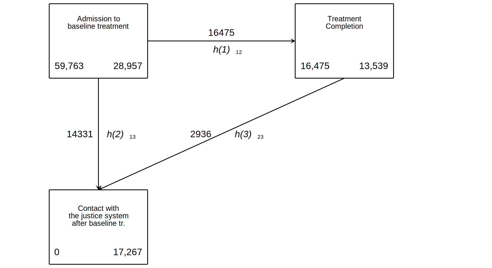

. clear all
. cap noi which tabout
C:\Users\CISS Fondecyt\ado\plus\t\tabout.ado
*! 2.0.8 Ian Watson 15mar2019
*! tabout version 3 (beta) available at: http://tabout.net.au
. if _rc==111 {
. cap noi ssc install tabout
. }
. cap noi which pathutil
C:\Users\CISS Fondecyt\ado\plus\p\pathutil.ado
*! version 2.2.0 19nov2020 daniel klein
. if _rc==111 {
. cap noi net install pathutil, from("http://fmwww.bc.edu/repec/bocode/p/")
. }
. cap noi which pathutil
C:\Users\CISS Fondecyt\ado\plus\p\pathutil.ado
*! version 2.2.0 19nov2020 daniel klein
. if _rc==111 {
. ssc install dirtools
. }
. cap noi which project
C:\Users\CISS Fondecyt\ado\plus\p\project.ado
*! version 1.3.1 22dec2013 picard@netbox.com
. if _rc==111 {
. ssc install project
. }
. cap noi which stipw
C:\Users\CISS Fondecyt\ado\plus\s\stipw.ado
*! Version 1.0.0 17Jan2022
. if _rc==111 {
. ssc install stipw
. }
. cap noi which stpm2
C:\Users\CISS Fondecyt\ado\plus\s\stpm2.ado
*! version 1.7.5 May2021
. if _rc==111 {
. ssc install stpm2
. }
. cap noi which rcsgen
C:\Users\CISS Fondecyt\ado\plus\r\rcsgen.ado
*! version 1.5.9 13FEB2022
. if _rc==111 {
. ssc install rcsgen
. }
. cap noi which matselrc
C:\Users\CISS Fondecyt\ado\plus\m\matselrc.ado
*! NJC 1.1.0 20 Apr 2000 (STB-56: dm79)
. if _rc==111 {
. cap noi net install dm79, from(http://www.stata.com/stb/stb56)
. }
. cap noi which pbalchk
C:\Users\CISS Fondecyt\ado\plus\p\pbalchk.ado
*! Version: 3.0.0
*! Author: Mark Lunt
*! Date: October 2, 2017 @ 12:47:35
. if _rc==111 {
. cap noi net install pbalchk from("http://personalpages.manchester.ac.uk/staff/mark.lunt/")
. }
Date created: 21:20:34 18 Apr 2023.
Get the folder
C:\Users\CISS Fondecyt\Mi unidad\Alvacast\SISTRAT 2022 (github)
Fecha: 18 Apr 2023, considerando un SO Windows para el usuario: CISS Fondecyt
Path data= ;
Tiempo: 18 Apr 2023, considerando un SO Windows
The file is located and named as: C:\Users\CISS Fondecyt\Mi unidad\Alvacast\SISTRAT 2022 (github)fiscalia_mariel_oct_2022_match_SENDA_pris.dta
=============================================================================
=============================================================================
We open the files
. use "fiscalia_mariel_jan_2023_match_SENDA.dta", clear
. encode escolaridad_rec, gen(esc_rec)
. encode sex, generate(sex_enc)
. encode sus_principal_mod, gen(sus_prin_mod)
. encode freq_cons_sus_prin, gen(fr_sus_prin)
. encode compromiso_biopsicosocial, gen(comp_biosoc)
. encode tenencia_de_la_vivienda_mod, gen(ten_viv)
. *encode dg_cie_10_rec, generate(dg_cie_10_mental_h) *already numeric
. encode dg_trs_cons_sus_or, generate(sud_severity_icd10)
. encode macrozona, generate(macrozone)
.
. recode policonsumo (0=0 "No polysubstance use") (1=1 "Polysubstance use"), gen(poly)
(0 differences between policonsumo and poly)
.
. lab var poly "Polysubstance use"
.
. *rename Clasificación clas
. *encode Clasificación, gen(clas)
. *drop Clasificación
.
. gen clas = 0
. replace clas = 1 if strpos(Clasificación,"Mixta")>0
(6,835 real changes made)
. replace clas = 2 if strpos(Clasificación,"Rural")>0
(5,750 real changes made)
. recode clas (0=0 "Urban") (1=1 "Mixed") (2=2 "Rural"), gen(clas2)
(0 differences between clas and clas2)
. drop clas
.
. rename clas2 clas
.
. lab var clas "Classification of Municipallities of Residence into Rural-Urban"
. lab var offender_d "Offenders (proxy of event; missing not event)"
.
. lab var porc_pobr "Poverty of municipallities of Residence (numeric)"
. lab var comuna_residencia_cod_rec "Municipallity of Residence (code)"
.
. drop Clasificación
.
. *región
. format comuna_residencia_cod_rec
variable name display format
-----------------------------------------
comuna_residencia_cod_rec %-9s
-----------------------------------------
. gen comuna_residencia_cod_rec_num = real(comuna_residencia_cod_rec)
(2 missing values generated)
. gen comuna_residencia_cod_rec_str = string(comuna_residencia_cod_rec_num ,"%05.0f")
.
. gen region=substr(comuna_residencia_cod_rec_str, 1,2)
. gen region_num = real(region)
(2 missing values generated)
.
. drop comuna_residencia_cod_rec_num
.
. lab var comuna_residencia_cod_rec "Municipallity of Residence (code)"
. lab var region "Region"
. lab var region_num "Region (numeric)"
. lab var age_at_censor_date "Age at censorship date (2019-11-13)"
.
. /*
> label define country1 1 "Ukraine" 2 "Bulgaria" 3 "Georgia" 4 "Russia" 5 "Lithuania" 6 "Czech Republic" ///
> 7 "Hungary" 8 "Slovakia" 9 "Portugal" 10 "Croatia" 11 "Ireland" 12 "Estonia" 13 "France" 14 "Cyprus" ///
> 15 "Poland" 16 "Germany" 17 "Great Britain" 18 "Slovenia" 19 "Israel" 20 "Spain" 21 "Belgium" ///
> 22 "Netherlands" 23 "Switzerland" 24 "Sweden" 25 "Norway" 26 "Denmark" 27 "Finland"
> label values country country1
> */
.
Then we set the data base in surirval format and bring the urban-rural classification of municipallities from this link.
===================================================================================
===================================================================================
. *si no está perdido cod_region, significa que hubo un registro (0/1) y el tiempo es el tiempo desde
. *set the indicator
. gen event=0
. replace event=1 if !missing(offender_d)
(22,287 real changes made)
.
. // censorship
. gen diff1a= age_at_censor_date-edad_al_ing_1
. // time to event
. gen diff2b= age_offending_imp-edad_al_ing_1
. // conditional
. gen diff2= cond(event==1, diff2b, diff1a) //age_offending_imp-edad_al_ing_1
. // completion
. gen diff1b= edad_al_egres_imp-edad_al_ing_1 // edad_al_egres_imp
. gen comp= cond(strpos(motivodeegreso_mod_imp_rec,"Treatment completion"), 1, 0)
. gen contact_js= event
. // time to tr. completion
. gen diff1 = cond(comp==1, diff1b, diff1a)
.
. gen edad_al_egres_imp_rec = cond(comp==1, edad_al_egres_imp, age_at_censor_date)
.
. lab var diff2 "Time to offending"
. lab var diff1 "Time to tr. completion"
. lab var edad_al_egres_imp_rec "Time to tr. completion (if not, censorship)"
.
. lab var contact_js "Contact with justice system status"
. lab var comp "Tr. completion status"
.
. drop comuna_residencia_cod_rec_str event
. drop diff1a diff1b diff2b
.
. //id in numeric format
. *encode hash_key, gen(id)
. *gen id= encode(hash_key)
. egen long id = group(hash_key)
. lab var id "HASH (numeric)"
.
. //Age at admission, corrected when 0 days in treatment
. gen edad_al_ing_1_mod = cond(diff1<0, edad_al_ing_1 -0.01,edad_al_ing_1)
. lab var edad_al_ing_1_mod "Age at admission (corrected)"
.
. //Sort variables
. order id hash_key edad_al_ing_1 edad_al_egres_imp age_offending_imp age_at_censor_date diff1 diff2 comp contact_js
. /*
> global covs_2_mod "i.policonsumo i.sus_prin_mod i.fr_sus_prin edad_al_ing_1 edad_ini_cons i.sex_enc i.esc_rec i.ten_viv i.dg_cie_10_rec i.sud_severi
> ty_icd10 n_off_vio n_off_acq n_off_sud i.clas porc_pobr i.macrozone"
> global covs_3_mod "policonsumo sus_prin_mod fr_sus_prin edad_al_ing_1 edad_ini_cons sex_enc esc_rec ten_viv dg_cie_10_rec n_off_vio n_off_acq n_off_
> sud clas porc_pobr macrozone"
> */
.
. //a string variable, so it is encoded
. destring id_centro, replace
id_centro: all characters numeric; replaced as int
(16 missing values generated)
.
. gen diff1c= cond(diff1<0.001, 0.01, diff1)
.
. drop diff1
.
. rename diff1c diff1
. lab var diff1 "Time to tr. completion"
.
. //Sort variables
. order id hash_key edad_al_ing_1 edad_al_egres_imp age_offending_imp age_at_censor_date diff1 diff2 comp contact_js
We show a table of missing values
. misstable sum poly sus_prin_mod fr_sus_prin edad_al_ing_1 edad_ini_cons sex_enc esc_rec ten_viv dg_cie_10_rec n_off_vio n_off_acq n_off_sud clas por
> c_pobr macrozone
Obs<.
+------------------------------
| | Unique
Variable | Obs=. Obs>. Obs<. | values Min Max
-------------+--------------------------------+------------------------------
sus_prin_mod | 1 70,862 | 5 1 5
fr_sus_prin | 355 70,508 | 5 1 5
edad_ini_c~s | 5,924 64,939 | 68 5 74
esc_rec | 317 70,546 | 3 1 3
ten_viv | 4,058 66,805 | 5 1 5
porc_pobr | 2 70,861 | >500 .0003295 .6305783
macrozone | 16 70,847 | 3 1 3
-----------------------------------------------------------------------------
And missing patterns
. misstable pat poly sus_prin_mod fr_sus_prin edad_al_ing_1 edad_ini_cons sex_enc esc_rec ten_viv dg_cie_10_rec n_off_vio n_off_acq n_off_sud clas por
> c_pobr macrozone
Missing-value patterns
(1 means complete)
| Pattern
Percent | 1 2 3 4 5 6 7
------------+------------------------
86% | 1 1 1 1 1 1 1
|
7 | 1 1 1 1 1 1 0
5 | 1 1 1 1 1 0 1
<1 | 1 1 1 1 1 0 0
<1 | 1 1 1 1 0 1 1
<1 | 1 1 1 0 1 1 1
<1 | 1 1 1 1 0 0 1
<1 | 1 1 1 0 1 1 0
<1 | 1 1 1 0 1 0 1
<1 | 1 1 1 1 0 0 0
<1 | 1 1 1 1 0 1 0
<1 | 1 1 1 0 1 0 0
<1 | 1 1 0 1 1 0 1
<1 | 1 1 0 1 1 1 0
<1 | 1 1 0 1 1 1 1
<1 | 1 0 1 1 1 1 1
<1 | 1 1 1 0 0 1 1
<1 | 0 1 1 0 0 0 0
<1 | 1 1 0 1 1 0 0
<1 | 1 1 1 0 0 0 0
<1 | 1 1 1 0 0 0 1
<1 | 1 1 1 0 0 1 0
------------+------------------------
100% |
Variables are (1) sus_prin_mod (2) porc_pobr (3) macrozone (4) esc_rec (5) fr_sus_prin (6) ten_viv (7) edad_ini_cons
86% of patients showed complete data, and 2% had missing data due to tenure status of the household and age of onset of substance use.
=======================================
=======================================
Time to tr. completion
. *comp contact_js
. *stset edad_al_egres_imp, enter(edad_al_ing_1_mod) failure(comp==1) //*scale(12)
. cap drop _st
. cap drop _d
. cap drop _t
. cap drop _t0
. cap drop _start
.
. cap gen _start= 0
. stset diff1, enter(_start) failure(comp==1) //*scale(12)
failure event: comp == 1
obs. time interval: (0, diff1]
enter on or after: time _start
exit on or before: failure
------------------------------------------------------------------------------
70,863 total observations
0 exclusions
------------------------------------------------------------------------------
70,863 observations remaining, representing
19,276 failures in single-record/single-failure data
287,715.27 total analysis time at risk and under observation
at risk from t = 0
earliest observed entry t = 0
last observed exit t = 12.57176
.
. stsum, by (poly)
failure _d: comp == 1
analysis time _t: diff1
enter on or after: time _start
| Incidence Number of |------ Survival time -----|
poly | Time at risk rate subjects 25% 50% 75%
---------+---------------------------------------------------------------------
No polys | 59,578.7698 .1074712 18443 1.164159 . .
Polysubs | 228,136.504 .0564267 52420 2.405592 . .
---------+---------------------------------------------------------------------
Total | 287,715.273 .0669968 70863 1.625129 . .
.
We calculated the inverse probability weights
. *https://www.statalist.org/forums/forum/general-stata-discussion/general/1600895-survival-model-stpm2-using-previously-estimated-weights
. *pweights are Stata’s sampling weights—the inverse of the probability that the subject was chosen from the population.
.
. stipw (logit poly sus_prin_mod fr_sus_prin edad_al_ing_1 edad_ini_cons sex_enc esc_rec ten_viv dg_cie_10_rec n_off_vio n_off_acq n_off_sud clas porc
> _pobr macrozone), distribution(weibull) ipwtype(stabilised) vce(robust) genweight(ipw_wgt) //*edad_al_ing_1 df(10) ten_viv colinealidad
9882 observations have missing treatment and/or missing confounder values and/or _st = 0.
These observations are excluded from the analysis, see variable _stipw_flag
Fitting logistic regression to obtain denominator for weights
Iteration 0: log likelihood = -35519.999
Iteration 1: log likelihood = -29792.782
Iteration 2: log likelihood = -29570.649
Iteration 3: log likelihood = -29570.242
Iteration 4: log likelihood = -29570.242
Fitting second logistic regression with no confounders to obtain numerator for stabilised weights
Iteration 0: log likelihood = -35519.999
Iteration 1: log likelihood = -35519.999
Fitting weighted survival model to obtain point estimates
failure _d: comp == 1
analysis time _t: diff1
enter on or after: time _start
weight: [pweight=ipw_wgt]
Fitting constant-only model:
Iteration 0: log pseudolikelihood = -64271.311
Iteration 1: log pseudolikelihood = -61514.983
Iteration 2: log pseudolikelihood = -61432.542
Iteration 3: log pseudolikelihood = -61432.443
Iteration 4: log pseudolikelihood = -61432.443
Fitting full model:
Iteration 0: log pseudolikelihood = -61432.443
Iteration 1: log pseudolikelihood = -61371.114
Iteration 2: log pseudolikelihood = -61370.876
Iteration 3: log pseudolikelihood = -61370.876
Displaying weighted survival model with Robust standard errors
Weibull PH regression Number of obs = 60,981
Wald chi2(1) = 58.97
Log pseudolikelihood = -61370.876 Prob > chi2 = 0.0000
------------------------------------------------------------------------------
| Robust
_t | Haz. Ratio Std. Err. z P>|z| [95% Conf. Interval]
-------------+----------------------------------------------------------------
poly | .8287182 .0202742 -7.68 0.000 .7899191 .869423
_cons | .1444749 .0030453 -91.78 0.000 .1386279 .1505685
-------------+----------------------------------------------------------------
/ln_p | -.4725821 .0036318 -130.12 0.000 -.4797003 -.465464
-------------+----------------------------------------------------------------
p | .6233905 .002264 .6189689 .6278437
1/p | 1.604131 .0058258 1.592753 1.61559
------------------------------------------------------------------------------
Note: _cons estimates baseline hazard.
We calculated the incidence rate.
. cap drop _st
. cap drop _d
. cap drop _t
. cap drop _t0
. cap drop _start
.
. cap gen _start= 0
. stset diff1 [pw=ipw_wgt], enter(_start) failure(comp==1) //*scale(12)
failure event: comp == 1
obs. time interval: (0, diff1]
enter on or after: time _start
exit on or before: failure
weight: [pweight=ipw_wgt]
------------------------------------------------------------------------------
70,863 total observations
9,882 weights invalid PROBABLE ERROR
------------------------------------------------------------------------------
60,981 observations remaining, representing
16,678 failures in single-record/single-failure data
229,317.06 total analysis time at risk and under observation
at risk from t = 0
earliest observed entry t = 0
last observed exit t = 12.32557
.
. stsum, by (poly)
failure _d: comp == 1
analysis time _t: diff1
enter on or after: time _start
weight: [pweight=ipw_wgt]
| Incidence Number of |------ Survival time -----|
poly | Time at risk rate subjects 25% 50% 75%
---------+---------------------------------------------------------------------
No polys | 61,334.2363 .0843216 17835.22 1.391781 . .
Polysubs | 174,998.945 .0665666 44401.7 1.79726 . .
---------+---------------------------------------------------------------------
Total | 236,333.182 .0711744 62236.92 1.635616 . .
Given the possible errors pointed out by stata in the weights, we calculated the IPW manually
. cap qui noi frame drop example_a
frame example_a not found
. frame copy default example_a
. frame example_a: logistic poly i.sus_prin_mod i.fr_sus_prin edad_al_ing_1 edad_ini_cons i.sex_enc i.esc_rec i.ten_viv i.dg_cie_10_rec i.n_off_vio i.
> n_off_acq i.n_off_sud i.clas porc_pobr i.macrozone, nolog
Logistic regression Number of obs = 60,981
LR chi2(27) = 13933.31
Prob > chi2 = 0.0000
Log likelihood = -28553.345 Pseudo R2 = 0.1961
-------------------------------------------------------------------------------------------------------------
poly | Odds Ratio Std. Err. z P>|z| [95% Conf. Interval]
--------------------------------------------+----------------------------------------------------------------
sus_prin_mod |
Cocaine hydrochloride | 4.314091 .1405755 44.86 0.000 4.047182 4.598603
Cocaine paste | 3.711172 .1012944 48.04 0.000 3.517856 3.915112
Marijuana | 2.400394 .114662 18.33 0.000 2.18586 2.635983
Other | 2.542306 .2087736 11.36 0.000 2.164349 2.986264
|
fr_sus_prin |
2 to 3 days a week | 1.356489 .0564807 7.32 0.000 1.250186 1.471832
4 to 6 days a week | 1.32917 .0600495 6.30 0.000 1.216536 1.452233
Daily | 1.490526 .0613763 9.69 0.000 1.374957 1.615809
Less than 1 day a week | .8239853 .047071 -3.39 0.001 .7367051 .9216058
|
edad_al_ing_1 | .9638512 .0010522 -33.73 0.000 .9617912 .9659156
edad_ini_cons | .9483434 .001846 -27.25 0.000 .9447321 .9519685
|
sex_enc |
Women | .8470801 .0217369 -6.47 0.000 .8055302 .8907732
|
esc_rec |
2-Completed high school or less | .7875212 .0240585 -7.82 0.000 .7417513 .8361153
3-Completed primary school or less | .6042393 .0202336 -15.04 0.000 .5658555 .6452268
|
ten_viv |
Others | .8918871 .1063883 -0.96 0.337 .7059512 1.126795
Owner/Transferred dwellings/Pays Dividends | .8371567 .0862349 -1.73 0.084 .6841087 1.024444
Renting | .9754207 .1019295 -0.24 0.812 .794773 1.197129
Stays temporarily with a relative | 1.040631 .1072828 0.39 0.699 .8502428 1.273651
|
dg_cie_10_rec |
Diagnosis unknown (under study) | 1.254299 .0378978 7.50 0.000 1.182177 1.33082
With psychiatric comorbidity | 1.450683 .0339206 15.91 0.000 1.3857 1.518713
|
1.n_off_vio | .9904797 .0279471 -0.34 0.735 .9371913 1.046798
1.n_off_acq | 1.199716 .0361672 6.04 0.000 1.130883 1.272738
1.n_off_sud | 1.096785 .0317454 3.19 0.001 1.036297 1.160803
|
clas |
Mixed | .6456518 .0219471 -12.87 0.000 .604038 .6901326
Rural | .5185464 .0193394 -17.61 0.000 .481994 .5578707
|
porc_pobr | 15.61556 2.418692 17.74 0.000 11.52697 21.15437
|
macrozone |
North | 1.666094 .0571907 14.87 0.000 1.55769 1.782042
South | .8639278 .0297692 -4.24 0.000 .8075078 .9242897
|
_cons | 8.320871 1.037526 16.99 0.000 6.516776 10.62441
-------------------------------------------------------------------------------------------------------------
Note: _cons estimates baseline odds.
.
. frame example_a: predict double ps //ps = propensity score
(option pr assumed; Pr(poly))
(9,882 missing values generated)
.
. frame example_a: gen double HAW = ((poly == 1) / ps) + ((poly == 0) / (1 - ps)) //
(9,882 missing values generated)
. *Compute the inverse probability Treatment weights (IPTW)
. frame example_a: summarize HAW, detail
HAW
-------------------------------------------------------------
Percentiles Smallest
1% 1.043065 1.010741
5% 1.063813 1.011246
10% 1.079079 1.014947 Obs 60,981
25% 1.12127 1.016076 Sum of Wgt. 60,981
50% 1.254799 Mean 2.039393
Largest Std. Dev. 2.326552
75% 1.788462 36.64304
90% 3.325771 40.13872 Variance 5.412842
95% 6.587939 40.45366 Skewness 4.807837
99% 12.83064 53.91683 Kurtosis 35.9779
. *keep if inrange(HAW, r(p05), r(p95))
. frame example_a: keep if inrange(HAW, r(p1), r(p99)) //2023-01-08
(11,100 observations deleted)
.
. frame example_a: cap drop _st
. frame example_a: cap drop _d
. frame example_a: cap drop _t
. frame example_a: cap drop _t0
. frame example_a: cap drop _start
.
. frame example_a: cap gen _start= 0
. frame example_a: stset diff1 [pw=HAW], enter(_start) failure(comp==1) //*scale(12)
failure event: comp == 1
obs. time interval: (0, diff1]
enter on or after: time _start
exit on or before: failure
weight: [pweight=HAW]
------------------------------------------------------------------------------
59,763 total observations
0 exclusions
------------------------------------------------------------------------------
59,763 observations remaining, representing
16,475 failures in single-record/single-failure data
223,317.35 total analysis time at risk and under observation
at risk from t = 0
earliest observed entry t = 0
last observed exit t = 12.32557
.
. frame example_a: stsum, by (poly)
failure _d: comp == 1
analysis time _t: diff1
enter on or after: time _start
weight: [pweight=HAW]
| Incidence Number of |------ Survival time -----|
poly | Time at risk rate subjects 25% 50% 75%
---------+---------------------------------------------------------------------
No polys | 179,687.316 .0870395 53647.68 1.372603 . .
Polysubs | 234,271.937 .0674141 59753.28 1.761644 . .
---------+---------------------------------------------------------------------
Total | 413,959.253 .0759329 113401 1.534247 . .
. frame example_a: stdescribe, weight
failure _d: comp == 1
analysis time _t: diff1
enter on or after: time _start
weight: [pweight=HAW]
|-------------- per subject --------------|
weighted weighted weighted
Category total mean min median max
------------------------------------------------------------------------------
no. of subjects 113400.96
no. of records 113400.96 1 1 1 1
(first) entry time 0 0 0 0
(final) exit time 3.650403 .0027322 3.202186 12.32557
subjects with gap 0
time on gap if gap 0
time at risk 413959.25 3.650403 .0027322 3.202186 12.32557
failures 31433.13 .2771858 0 0 1
------------------------------------------------------------------------------
*################### Time to contact with the justice system
We defined the incidence rates and weights for the time to contact with the justice system
. *comp contact_js
. *stset edad_al_egres_imp, enter(edad_al_ing_1_mod) failure(comp==1) //*scale(12)
. cap drop _st
. cap drop _d
. cap drop _t
. cap drop _t0
. cap drop _start
.
. cap gen _start= 0
. stset diff2, enter(_start) failure(contact_js==1) //*scale(12)
failure event: contact_js == 1
obs. time interval: (0, diff2]
enter on or after: time _start
exit on or before: failure
------------------------------------------------------------------------------
70,863 total observations
0 exclusions
------------------------------------------------------------------------------
70,863 observations remaining, representing
22,287 failures in single-record/single-failure data
272,564.41 total analysis time at risk and under observation
at risk from t = 0
earliest observed entry t = 0
last observed exit t = 12.57176
.
. stsum, by (poly)
failure _d: contact_js == 1
analysis time _t: diff2
enter on or after: time _start
| Incidence Number of |------ Survival time -----|
poly | Time at risk rate subjects 25% 50% 75%
---------+---------------------------------------------------------------------
No polys | 66,792.8278 .0541226 18443 5.412414 . .
Polysubs | 205,771.586 .0907414 52420 2.495617 . .
---------+---------------------------------------------------------------------
Total | 272,564.413 .0817678 70863 2.904719 . .
.
We then computed the data with weights
. *https://www.statalist.org/forums/forum/general-stata-discussion/general/1600895-survival-model-stpm2-using-previously-estimated-weights
. *pweights are Stata’s sampling weights—the inverse of the probability that the subject was chosen from the population.
.
. stipw (logit poly sus_prin_mod fr_sus_prin edad_al_ing_1 edad_ini_cons sex_enc esc_rec ten_viv dg_cie_10_rec n_off_vio n_off_acq n_off_sud clas porc
> _pobr macrozone), distribution(weibull) ipwtype(stabilised) vce(robust) genweight(ipw_wgt2) //*edad_al_ing_1 df(10) ten_viv
9882 observations have missing treatment and/or missing confounder values and/or _st = 0.
These observations are excluded from the analysis, see variable _stipw_flag
Fitting logistic regression to obtain denominator for weights
Iteration 0: log likelihood = -35519.999
Iteration 1: log likelihood = -29792.782
Iteration 2: log likelihood = -29570.649
Iteration 3: log likelihood = -29570.242
Iteration 4: log likelihood = -29570.242
Fitting second logistic regression with no confounders to obtain numerator for stabilised weights
Iteration 0: log likelihood = -35519.999
Iteration 1: log likelihood = -35519.999
Fitting weighted survival model to obtain point estimates
failure _d: contact_js == 1
analysis time _t: diff2
enter on or after: time _start
weight: [pweight=ipw_wgt2]
Fitting constant-only model:
Iteration 0: log pseudolikelihood = -56613.048
Iteration 1: log pseudolikelihood = -56584.745
Iteration 2: log pseudolikelihood = -56584.738
Iteration 3: log pseudolikelihood = -56584.738
Fitting full model:
Iteration 0: log pseudolikelihood = -56584.738
Iteration 1: log pseudolikelihood = -56584.293
Iteration 2: log pseudolikelihood = -56584.293
Displaying weighted survival model with Robust standard errors
Weibull PH regression Number of obs = 60,981
Wald chi2(1) = 0.38
Log pseudolikelihood = -56584.293 Prob > chi2 = 0.5370
------------------------------------------------------------------------------
| Robust
_t | Haz. Ratio Std. Err. z P>|z| [95% Conf. Interval]
-------------+----------------------------------------------------------------
poly | 1.015887 .0259395 0.62 0.537 .9662982 1.068021
_cons | .0858533 .0020809 -101.29 0.000 .0818701 .0900302
-------------+----------------------------------------------------------------
/ln_p | -.0479137 .0056126 -8.54 0.000 -.0589141 -.0369132
-------------+----------------------------------------------------------------
p | .9532161 .00535 .9427878 .9637597
1/p | 1.04908 .005888 1.037603 1.060684
------------------------------------------------------------------------------
Note: _cons estimates baseline hazard.
We calculated the incidence rate.
. cap drop _st
. cap drop _d
. cap drop _t
. cap drop _t0
. cap drop _start
.
. cap gen _start= 0
.
. *The stset command is used for survival analysis to set the time variable and specify the structure of the dataset, while the [pw] option specifies
> the weights for each observation in the analysis.
. stset diff2 [pw=ipw_wgt2], enter(_start) failure(contact_js==1) //*scale(12)
failure event: contact_js == 1
obs. time interval: (0, diff2]
enter on or after: time _start
exit on or before: failure
weight: [pweight=ipw_wgt2]
------------------------------------------------------------------------------
70,863 total observations
9,882 weights invalid PROBABLE ERROR
------------------------------------------------------------------------------
60,981 observations remaining, representing
17,942 failures in single-record/single-failure data
221,228.05 total analysis time at risk and under observation
at risk from t = 0
earliest observed entry t = 0
last observed exit t = 11.91507
.
. stsum, by (poly)
failure _d: contact_js == 1
analysis time _t: diff2
enter on or after: time _start
weight: [pweight=ipw_wgt2]
| Incidence Number of |------ Survival time -----|
poly | Time at risk rate subjects 25% 50% 75%
---------+---------------------------------------------------------------------
No polys | 60,464.9445 .0803327 17835.22 3.270333 . .
Polysubs | 168,424.47 .0811235 44401.7 2.942625 . .
---------+---------------------------------------------------------------------
Total | 228,889.415 .0809146 62236.92 3.038083 . .
. stdescribe, weight
failure _d: contact_js == 1
analysis time _t: diff2
enter on or after: time _start
weight: [pweight=ipw_wgt2]
|-------------- per subject --------------|
weighted weighted weighted
Category total mean min median max
------------------------------------------------------------------------------
no. of subjects 62236.924
no. of records 62236.924 1 1 1 1
(first) entry time 0 0 0 0
(final) exit time 3.677711 .0152209 3.245191 11.91507
subjects with gap 0
time on gap if gap 0
time at risk 228889.41 3.677711 .0152209 3.245191 11.91507
failures 18520.496 .2975805 0 0 1
------------------------------------------------------------------------------
Given the possible errors pointed out by stata in the weights, we calculated the IPW manually
. cap qui noi drop ps2
variable ps2 not found
. cap qui noi drop HAW2
variable HAW2 not found
.
. cap qui noi frame drop example_b
frame example_b not found
. frame copy default example_b
. frame example_b: logistic poly i.sus_prin_mod i.fr_sus_prin edad_al_ing_1 edad_ini_cons i.sex_enc i.esc_rec i.ten_viv i.dg_cie_10_rec i.n_off_vio i.
> n_off_acq i.n_off_sud i.clas porc_pobr i.macrozone, nolog
Logistic regression Number of obs = 60,981
LR chi2(27) = 13933.31
Prob > chi2 = 0.0000
Log likelihood = -28553.345 Pseudo R2 = 0.1961
-------------------------------------------------------------------------------------------------------------
poly | Odds Ratio Std. Err. z P>|z| [95% Conf. Interval]
--------------------------------------------+----------------------------------------------------------------
sus_prin_mod |
Cocaine hydrochloride | 4.314091 .1405755 44.86 0.000 4.047182 4.598603
Cocaine paste | 3.711172 .1012944 48.04 0.000 3.517856 3.915112
Marijuana | 2.400394 .114662 18.33 0.000 2.18586 2.635983
Other | 2.542306 .2087736 11.36 0.000 2.164349 2.986264
|
fr_sus_prin |
2 to 3 days a week | 1.356489 .0564807 7.32 0.000 1.250186 1.471832
4 to 6 days a week | 1.32917 .0600495 6.30 0.000 1.216536 1.452233
Daily | 1.490526 .0613763 9.69 0.000 1.374957 1.615809
Less than 1 day a week | .8239853 .047071 -3.39 0.001 .7367051 .9216058
|
edad_al_ing_1 | .9638512 .0010522 -33.73 0.000 .9617912 .9659156
edad_ini_cons | .9483434 .001846 -27.25 0.000 .9447321 .9519685
|
sex_enc |
Women | .8470801 .0217369 -6.47 0.000 .8055302 .8907732
|
esc_rec |
2-Completed high school or less | .7875212 .0240585 -7.82 0.000 .7417513 .8361153
3-Completed primary school or less | .6042393 .0202336 -15.04 0.000 .5658555 .6452268
|
ten_viv |
Others | .8918871 .1063883 -0.96 0.337 .7059512 1.126795
Owner/Transferred dwellings/Pays Dividends | .8371567 .0862349 -1.73 0.084 .6841087 1.024444
Renting | .9754207 .1019295 -0.24 0.812 .794773 1.197129
Stays temporarily with a relative | 1.040631 .1072828 0.39 0.699 .8502428 1.273651
|
dg_cie_10_rec |
Diagnosis unknown (under study) | 1.254299 .0378978 7.50 0.000 1.182177 1.33082
With psychiatric comorbidity | 1.450683 .0339206 15.91 0.000 1.3857 1.518713
|
1.n_off_vio | .9904797 .0279471 -0.34 0.735 .9371913 1.046798
1.n_off_acq | 1.199716 .0361672 6.04 0.000 1.130883 1.272738
1.n_off_sud | 1.096785 .0317454 3.19 0.001 1.036297 1.160803
|
clas |
Mixed | .6456518 .0219471 -12.87 0.000 .604038 .6901326
Rural | .5185464 .0193394 -17.61 0.000 .481994 .5578707
|
porc_pobr | 15.61556 2.418692 17.74 0.000 11.52697 21.15437
|
macrozone |
North | 1.666094 .0571907 14.87 0.000 1.55769 1.782042
South | .8639278 .0297692 -4.24 0.000 .8075078 .9242897
|
_cons | 8.320871 1.037526 16.99 0.000 6.516776 10.62441
-------------------------------------------------------------------------------------------------------------
Note: _cons estimates baseline odds.
.
. frame example_b: predict double ps2 //ps = propensity score
(option pr assumed; Pr(poly))
(9,882 missing values generated)
.
. frame example_b: gen double HAW2 = ((poly == 1) / ps2) + ((poly == 0) / (1 - ps2)) //
(9,882 missing values generated)
. *Compute the inverse probability Treatment weights (IPTW)
. frame example_b: summarize HAW2, detail
HAW2
-------------------------------------------------------------
Percentiles Smallest
1% 1.043065 1.010741
5% 1.063813 1.011246
10% 1.079079 1.014947 Obs 60,981
25% 1.12127 1.016076 Sum of Wgt. 60,981
50% 1.254799 Mean 2.039393
Largest Std. Dev. 2.326552
75% 1.788462 36.64304
90% 3.325771 40.13872 Variance 5.412842
95% 6.587939 40.45366 Skewness 4.807837
99% 12.83064 53.91683 Kurtosis 35.9779
. *keep if inrange(HAW, r(p05), r(p95))
. frame example_b: keep if inrange(HAW2, r(p1), r(p99)) //2023-01-08
(11,100 observations deleted)
.
. frame example_b: cap drop _st
. frame example_b: cap drop _d
. frame example_b: cap drop _t
. frame example_b: cap drop _t0
. frame example_b: cap drop _start
.
. frame example_b: cap gen _start= 0
. frame example_b: stset diff2 [pw=HAW2], enter(_start) failure(contact_js==1) //*scale(12)
failure event: contact_js == 1
obs. time interval: (0, diff2]
enter on or after: time _start
exit on or before: failure
weight: [pweight=HAW2]
------------------------------------------------------------------------------
59,763 total observations
0 exclusions
------------------------------------------------------------------------------
59,763 observations remaining, representing
17,267 failures in single-record/single-failure data
217,349.13 total analysis time at risk and under observation
at risk from t = 0
earliest observed entry t = 0
last observed exit t = 11.91507
.
. frame example_b: stsum, by (poly)
failure _d: contact_js == 1
analysis time _t: diff2
enter on or after: time _start
weight: [pweight=HAW2]
| Incidence Number of |------ Survival time -----|
poly | Time at risk rate subjects 25% 50% 75%
---------+---------------------------------------------------------------------
No polys | 182,624.916 .072249 53647.68 3.741665 . .
Polysubs | 226,642.837 .0802631 59753.28 3.016474 . .
---------+---------------------------------------------------------------------
Total | 409,267.754 .076687 113401 3.348228 . .
. frame example_b: stdescribe, weight
failure _d: contact_js == 1
analysis time _t: diff2
enter on or after: time _start
weight: [pweight=HAW2]
|-------------- per subject --------------|
weighted weighted weighted
Category total mean min median max
------------------------------------------------------------------------------
no. of subjects 113400.96
no. of records 113400.96 1 1 1 1
(first) entry time 0 0 0 0
(final) exit time 3.609033 .0152209 3.217474 11.91507
subjects with gap 0
time on gap if gap 0
time at risk 409267.75 3.609033 .0152209 3.217474 11.91507
failures 31385.522 .2767659 0 0 1
------------------------------------------------------------------------------
##############################
##############################
. quietly tab sus_prin_mod, generate(sus_prin_mod_cat)
. quietly tab fr_sus_prin, gen(fr_sus_prin_cat)
.
. quietly tab esc_rec, gen(esc_rec_tab)
. quietly tab ten_viv, gen(ten_viv_tab)
. quietly tab dg_cie_10_rec, gen(dg_cie_10_rec_tab)
. quietly tab clas, gen(clas)
. quietly tab macrozone, gen(macrozone_cat)
.
. lab var macrozone_cat2 "Macrozone (North)"
. lab var macrozone_cat3 "Macrozone (South)"
. lab var clas2 "Municipallity of Residence Classification (Mixed)"
. lab var clas3 "Municipallity of Residence Classification (Rural)"
. lab var sex_enc "Sex (Women)"
. lab var n_off_vio "Pre-tr. criminality (Violent)"
. lab var n_off_acq "Pre-tr. criminality (Acquisitve)"
. lab var n_off_sud "Pre-tr. criminality (substance-related)"
. lab var dg_cie_10_rec_tab2 "Psychiatric comorbidity ICD-10 (Diagnosis under study)"
. lab var dg_cie_10_rec_tab3 "Psychiatric comorbidity ICD-10 (Diagnosis under study)"
. lab var ten_viv_tab1 "Housing situation (Illegal Settlement)"
. lab var ten_viv_tab3 "Housing situation (owner/Tr. dwellings/Pays divide)"
. lab var ten_viv_tab4 "Housing situation (Renting)"
. lab var ten_viv_tab5 "Housing situation (Stays temporary w/ a relative)"
. lab var esc_rec_tab2 "Educational Attainment (Complete high-school or less)"
. lab var esc_rec_tab3 "Educational Attainment (Complete high-school or less)"
. lab var edad_al_ing_1 "Admission Age"
. lab var edad_ini_cons "Substance use onset age"
. lab var sus_prin_mod_cat1 "Primary`=char(9)'Subs`=char(9)'at`=char(9)'Adm.`=char(9)'(Alcohol)" //asdsa
. lab var sus_prin_mod_cat2 "Primary Subs at Adm. (Snort cocaine)"
. lab var sus_prin_mod_cat3 "Primary Subs at Adm. (Cocaine paste base)"
. lab var sus_prin_mod_cat4 "Primary Subs at Adm .(Marijuana)"
. lab var fr_sus_prin_cat1 "Primary Subs use Freq (1 day a week or more)"
. lab var fr_sus_prin_cat2 "Primary Subs use Freq (2-3 days a week or more)"
. lab var fr_sus_prin_cat3 "Primary Subs use Freq (4-6 days a week or more)"
. lab var fr_sus_prin_cat4 "Primary Subs use Freq (Daily)"
.
.
. logistic poly sus_prin_mod_cat1 sus_prin_mod_cat2 sus_prin_mod_cat3 sus_prin_mod_cat4 ///
> fr_sus_prin_cat1 fr_sus_prin_cat2 fr_sus_prin_cat3 fr_sus_prin_cat4 ///
> edad_al_ing_1 edad_ini_cons ///
> sex_enc ///
> esc_rec_tab2 esc_rec_tab3 ///
> ten_viv_tab1 ten_viv_tab3 ten_viv_tab4 ten_viv_tab5 ///
> dg_cie_10_rec_tab2 dg_cie_10_rec_tab3 ///
> n_off_vio ///
> n_off_acq ///
> n_off_sud ///
> clas2 clas3 ///
> porc_pobr ///
> macrozone_cat2 macrozone_cat3, nolog
Logistic regression Number of obs = 60,981
LR chi2(27) = 13933.31
Prob > chi2 = 0.0000
Log likelihood = -28553.345 Pseudo R2 = 0.1961
------------------------------------------------------------------------------------
poly | Odds Ratio Std. Err. z P>|z| [95% Conf. Interval]
-------------------+----------------------------------------------------------------
sus_prin_mod_cat1 | .3933437 .0323013 -11.36 0.000 .3348665 .4620327
sus_prin_mod_cat2 | 1.696921 .1451577 6.18 0.000 1.434988 2.006665
sus_prin_mod_cat3 | 1.459766 .1218049 4.53 0.000 1.239533 1.71913
sus_prin_mod_cat4 | .9441799 .0870699 -0.62 0.533 .7880596 1.131229
fr_sus_prin_cat1 | 1.213614 .0693289 3.39 0.001 1.085063 1.357395
fr_sus_prin_cat2 | 1.646254 .0782354 10.49 0.000 1.499841 1.806961
fr_sus_prin_cat3 | 1.6131 .081531 9.46 0.000 1.460962 1.781081
fr_sus_prin_cat4 | 1.808923 .0847687 12.65 0.000 1.650181 1.982936
edad_al_ing_1 | .9638512 .0010522 -33.73 0.000 .9617912 .9659156
edad_ini_cons | .9483434 .001846 -27.25 0.000 .9447321 .9519685
sex_enc | .8470801 .0217369 -6.47 0.000 .8055302 .8907732
esc_rec_tab2 | .7875212 .0240585 -7.82 0.000 .7417513 .8361153
esc_rec_tab3 | .6042393 .0202336 -15.04 0.000 .5658555 .6452268
ten_viv_tab1 | 1.121218 .133744 0.96 0.337 .8874726 1.416529
ten_viv_tab3 | .9386353 .0607476 -0.98 0.328 .8268142 1.065579
ten_viv_tab4 | 1.093659 .0734767 1.33 0.183 .9587265 1.247583
ten_viv_tab5 | 1.166774 .0758046 2.37 0.018 1.027271 1.325223
dg_cie_10_rec_tab2 | 1.254299 .0378978 7.50 0.000 1.182177 1.33082
dg_cie_10_rec_tab3 | 1.450683 .0339206 15.91 0.000 1.3857 1.518713
n_off_vio | .9904797 .0279471 -0.34 0.735 .9371913 1.046798
n_off_acq | 1.199716 .0361672 6.04 0.000 1.130883 1.272738
n_off_sud | 1.096785 .0317454 3.19 0.001 1.036297 1.160803
clas2 | .6456518 .0219471 -12.87 0.000 .604038 .6901326
clas3 | .5185464 .0193394 -17.61 0.000 .481994 .5578707
porc_pobr | 15.61556 2.418692 17.74 0.000 11.52697 21.15437
macrozone_cat2 | 1.666094 .0571907 14.87 0.000 1.55769 1.782042
macrozone_cat3 | .8639278 .0297692 -4.24 0.000 .8075078 .9242897
_cons | 18.35276 2.432124 21.96 0.000 14.15466 23.79597
------------------------------------------------------------------------------------
Note: _cons estimates baseline odds.
. predict double ps //ps = propensity score
(option pr assumed; Pr(poly))
(9,882 missing values generated)
. gen double HAW = ((poly == 1) / ps) + ((poly == 0) / (1 - ps)) //
(9,882 missing values generated)
. *Compute the inverse probability Treatment weights (IPTW)
. summarize HAW, detail
HAW
-------------------------------------------------------------
Percentiles Smallest
1% 1.043065 1.010741
5% 1.063813 1.011246
10% 1.079079 1.014947 Obs 60,981
25% 1.12127 1.016076 Sum of Wgt. 60,981
50% 1.254799 Mean 2.039393
Largest Std. Dev. 2.326552
75% 1.788462 36.64304
90% 3.325771 40.13872 Variance 5.412842
95% 6.587939 40.45366 Skewness 4.807837
99% 12.83064 53.91683 Kurtosis 35.9779
. //ci mean HAW //2022-01-08 does not work well, many out
. keep if inrange(HAW, r(p1), r(p99))
(11,100 observations deleted)
. //keep if inrange(HAW, r(lb), r(ub))
.
. cap drop _st
. cap drop _d
. cap drop _t
. cap drop _t0
. cap drop _start
.
. cap gen _start= 0
. stset diff1 [pw=HAW], enter(_start) failure(comp==1) id(id) //*scale(12)
id: id
failure event: comp == 1
obs. time interval: (diff1[_n-1], diff1]
enter on or after: time _start
exit on or before: failure
weight: [pweight=HAW]
------------------------------------------------------------------------------
59,763 total observations
0 exclusions
------------------------------------------------------------------------------
59,763 observations remaining, representing
59,763 subjects
16,475 failures in single-failure-per-subject data
223,317.35 total analysis time at risk and under observation
at risk from t = 0
earliest observed entry t = 0
last observed exit t = 12.32557
.
. stsum, by (poly)
failure _d: comp == 1
analysis time _t: diff1
enter on or after: time _start
id: id
weight: [pweight=HAW]
| Incidence Number of |------ Survival time -----|
poly | Time at risk rate subjects 25% 50% 75%
---------+---------------------------------------------------------------------
No polys | 179,687.316 .0870395 53647.68 1.372603 . .
Polysubs | 234,271.937 .0674141 59753.28 1.761644 . .
---------+---------------------------------------------------------------------
Total | 413,959.253 .0759329 113401 1.534247 . .
. scalar ir_total= round(r(ir),.01)
. global ir_total= ir_total
We explored the inicidence rate ratios (IRR) of polysubstance use.
. stptime, title(person-years) per(1000) by(poly)
failure _d: comp == 1
analysis time _t: diff1
enter on or after: time _start
id: id
weight: [pweight=HAW]
poly | person-years Failures Rate [95% Conf. Interval]
-----------+-----------------------------------------------------------
No poly~e | 179687.32 15639.9 87.039487 83.53578 90.69968
Polysub~e | 234271.94 15793.2 67.414129 65.88591 68.98316
-----------+-----------------------------------------------------------
Total | 413959.25 31433.1 75.93291 74.21936 77.69024
Note: The jackknife was used to calculate confidence intervals.
.
. stmh poly
failure _d: comp == 1
analysis time _t: diff1
enter on or after: time _start
id: id
weight: [pweight=HAW]
Mantel-Haenszel estimate of the rate ratio
comparing poly==1 vs. poly==0
------------------------------------------------------------------------
Rate ratio chi2 P>chi2 [95% Conf. Interval]
------------------------------------------------------------------------
0.775 515.80 0.0000 0.758 0.792
------------------------------------------------------------------------
Warning: pweights used; confidence intervals and p-values may be wrong.
. scalar poly_rr= round( r(rratio), .01)
. scalar poly_rr_lb= round(r(lb),.01)
. scalar poly_rr_ub= round(r(ub),.01)
. local ir1= poly_rr
. local ir2= poly_rr_lb
. local ir3= poly_rr_ub
. global poly_irr " `title': IRR `ir1' (95%IC `ir2' - `ir3') "
.
. *set trace on
. local stname `" "2_1" "'
. local titl `" "Poly vs No-Poly" "'
. foreach s of local stname {
2. gettoken title titl: titl
3. cap noi qui ir _d poly _t
4. scalar ir_`s' =round(r(irr),.01)
5. *di ir_`s'
. scalar ir_`s'_lb =round(r(lb_irr),.01)
6. *di ir_`s'_lb
. scalar ir_`s'_ub =round(r(ub_irr),.01)
7. *di ir_`s'_ub
. local ir1= ir_`s'
8. local ir2= ir_`s'_lb
9. local ir3= ir_`s'_ub
10. *di in gr _col(13) " `title': IRR `ir1' (IC 95% `ir2' - `ir3') "
. global irr_`s' " `title': IRR (non weighted) `ir1' (IC 95% `ir2' - `ir3') "
11. global ir_`s' "`ir1' (IC 95% `ir2' - `ir3')"
12. }
Get schoenfeld residuals
. qui stcox poly , robust nolog schoenfeld(sch*) scaledsch(sca*)
. qui estat phtest, log detail
. qui scalar chi2_scho_test = r(chi2)
.
. qui mat mat_scho_test = r(phtest)
.
. esttab matrix(mat_scho_test) using "mat_scho_test_ser23.html", replace
(output written to mat_scho_test_ser23.html)
.
| mat_scho_test | ||||
| rho | chi2 | df | p | |
| poly | -.0202848 | 11.03064 | 1 | .0008962 |
. pbalchk poly sus_prin_mod_cat1 sus_prin_mod_cat2 sus_prin_mod_cat3 sus_prin_mod_cat4 ///
> fr_sus_prin_cat1 fr_sus_prin_cat2 fr_sus_prin_cat3 fr_sus_prin_cat4 ///
> edad_al_ing_1 edad_ini_cons sex_enc ///
> esc_rec_tab2 esc_rec_tab3 ///
> ten_viv_tab1 ten_viv_tab3 ten_viv_tab4 ten_viv_tab5 ///
> dg_cie_10_rec_tab2 dg_cie_10_rec_tab3 ///
> n_off_vio ///
> n_off_acq ///
> n_off_sud ///
> clas2 clas3 ///
> porc_pobr ///
> macrozone_cat2 macrozone_cat3, wt(HAW) p mahal sqrt diag graph xline(.15 -.15)
Mean in treated Mean in Untreated p-value for diff.
----------------------------------------------------------------------
sus_prin_m~1 | 0.34 0.38 0.000
sus_prin_m~2 | 0.19 0.18 0.003
sus_prin_m~3 | 0.38 0.35 0.000
sus_prin_m~4 | 0.07 0.08 0.002
fr_sus_pri~1 | 0.07 0.07 0.068
fr_sus_pri~2 | 0.29 0.29 0.878
fr_sus_pri~3 | 0.17 0.17 0.055
fr_sus_pri~4 | 0.43 0.41 0.000
edad_al_in~1 | 35.79 36.74 0.000
edad_ini_c~s | 16.64 17.15 0.000
sex_enc | 1.25 1.27 0.001
esc_rec_tab2 | 0.56 0.55 0.075
esc_rec_tab3 | 0.28 0.29 0.005
ten_viv_tab1 | 0.01 0.01 0.344
ten_viv_tab3 | 0.37 0.40 0.000
ten_viv_tab4 | 0.18 0.18 0.640
ten_viv_tab5 | 0.41 0.38 0.000
dg_cie_10_~2 | 0.19 0.19 0.752
dg_cie_10_~3 | 0.42 0.39 0.000
n_off_vio | 0.18 0.17 0.303
n_off_acq | 0.19 0.17 0.000
n_off_sud | 0.18 0.17 0.000
clas2 | 0.10 0.10 0.062
clas3 | 0.08 0.09 0.059
porc_pobr | 0.12 0.12 0.000
macrozone_~2 | 0.14 0.11 0.000
macrozone_~3 | 0.09 0.10 0.271
----------------------------------------------------------------------
Mahalonobis Distance between mean vectors:
(original covariance in treated): 0.064
(square root): 0.252
(Weighted covariance in treated): 0.060
(square root): 0.246
. graph save "Graph" "`c(pwd)'\_figs\pbal2.gph", replace
(file C:\Users\CISS Fondecyt\Mi unidad\Alvacast\SISTRAT 2022 (github)\_figs\pbal2.gph saved)
.
. mat smd_before = r(usmeandiff)
.
. // Change legends
. gr_edit .legend.plotregion1.label[1].text = {}
. gr_edit .legend.plotregion1.label[1].text.Arrpush Before Adjustment
. gr_edit .legend.plotregion1.label[2].text = {}
. gr_edit .legend.plotregion1.label[2].text.Arrpush After Adjustment
.
. //change image background
. gr_edit style.editstyle boxstyle(shadestyle(color(gs16))) editcopy
. gr_edit .yaxis1.style.editstyle majorstyle(tickstyle(textstyle(size(vsmall)))) editcopy
.
. //mod points in grayscale
. gr_edit .plotregion1.plot1.style.editstyle marker(fillcolor(gs7%60)) editcopy
. gr_edit .plotregion1.plot1.style.editstyle marker(linestyle(color(gs7%60))) editcopy
. gr_edit .plotregion1.plot2.style.editstyle marker(fillcolor(gs3%60)) editcopy
. gr_edit .plotregion1.plot2.style.editstyle marker(linestyle(color(gs3%60))) editcopy
.
. // modify label
. gr_edit .legend.style.editstyle boxstyle(linestyle(color(none))) editcopy //.legend.Edit , style(rows(2)) style(cols(0)) keepstyles
. // modify label
. gr_edit .xaxis1.title.text = {}
. gr_edit .xaxis1.title.text.Arrpush Standardardized differences
. // note
. gr_edit .note.text = {}
. gr_edit .note.text.Arrpush Note: Red lines depict standardized differences of -0.15 and +0.15
. gr_edit .note.DragBy -.2314887155038407 -45
.
. //title
. gr_edit .title.style.editstyle size(medlarge) editcopy
. gr_edit .title.text = {}
. gr_edit .title.text.Arrpush Figure 1. Graphical Representation of SMDs
. gr_edit .title.style.editstyle color(black) editcopy
. gr_edit .title.style.editstyle box_alignment(nwest) editcopy
. gr_edit .title.style.editstyle horizontal(left) editcopy
. gr_edit .title.xoffset = -45
. gr_edit .title.DragBy 2 0
.
.
. /*
> gr_edit .yaxis1.major.num_rule_ticks = 26
> gr_edit .yaxis1.edit_tick 27 26 `"Primary Subs Adm (Cocaine paste base)"', tickset(major)
> gr_edit .yaxis1.major.num_rule_ticks = 26
> gr_edit .yaxis1.edit_tick 24 24 `"Primary Subs Adm (Cocaine)"', tickset(major)
> gr_edit .yaxis1.major.num_rule_ticks = 26
> //gr_edit .yaxis1.edit_tick 24 24 `"Primary Subs Adm (Cocaine)"', tickset(major)
> gr_edit .yaxis1.major.num_rule_ticks = 25
> //gr_edit .yaxis1.edit_tick 23 23 `"Housing situation (Owner/Tr. dwellings/Pays divide)"', tickset(major)
> gr_edit .yaxis1.major.num_rule_ticks = 25
> gr_edit .yaxis1.edit_tick 23 23 `"Housing situation (Owner/Tr. dwellings/Pays divide)"', tickset(major)
> gr_edit .yaxis1.major.num_rule_ticks = 24
> gr_edit .yaxis1.edit_tick 22 22 `"Housing situation (Stays temporary w/ relative)"', tickset(major)
> gr_edit .yaxis1.major.num_rule_ticks = 23
> gr_edit .yaxis1.edit_tick 21 21 `"Macrozone (South)"', tickset(major)
> gr_edit .yaxis1.major.num_rule_ticks = 22
> gr_edit .yaxis1.edit_tick 20 20 `"Pre-tr. criminality (Acquisitve)"', tickset(major)
> gr_edit .yaxis1.major.num_rule_ticks = 21
> gr_edit .yaxis1.edit_tick 17 17 `"Macrozone (North)"', tickset(major)
> gr_edit .yaxis1.major.num_rule_ticks = 19
> gr_edit .yaxis1.edit_tick 16 16 `"Pre-tr. criminality (substance-related)"', tickset(major)
> gr_edit .yaxis1.major.num_rule_ticks = 19
> gr_edit .yaxis1.edit_tick 17 19 `"Educational Attainment (Complete primary school or less)"', tickset(major)
> gr_edit .yaxis1.major.num_rule_ticks = 18
> gr_edit .yaxis1.edit_tick 16 18 `"Municipallity of Residence Classification (Mixed)"', tickset(major)
> gr_edit .yaxis1.major.num_rule_ticks = 17
> gr_edit .yaxis1.edit_tick 12 12 `"Municipallity of Residence Classification (Urban)"', tickset(major)
> gr_edit .yaxis1.major.num_rule_ticks = 16
> gr_edit .yaxis1.edit_tick 13 14 `"Educational Attainment (Complete high-school or less)"', tickset(major)
> gr_edit .yaxis1.major.num_rule_ticks = 14
> gr_edit .yaxis1.edit_tick 12 15 `"Substance use frequency (primary subs)- Daily"', tickset(major)
> gr_edit .yaxis1.major.num_rule_ticks = 13
> gr_edit .yaxis1.edit_tick 10 10 `"Substance use frequency (primary subs)- < 1 day a week"', tickset(major)
> gr_edit .yaxis1.major.num_rule_ticks = 4
> gr_edit .yaxis1.edit_tick 2 2 `"Housing situation (Other)"', tickset(major)
> gr_edit .yaxis1.major.num_rule_ticks = 3
> gr_edit .yaxis1.edit_tick 1 1 `"Substance use frequency (primary subs)- 4-6 days a week"', tickset(major)
> gr_edit .yaxis1.major.num_rule_ticks = 7
> gr_edit .yaxis1.edit_tick 5 5 `"Pre-tr. criminality (Violent)"', tickset(major)
> gr_edit .yaxis1.major.num_rule_ticks = 6
> gr_edit .yaxis1.edit_tick 4 4 `"Primary Subs Adm (Other)"', tickset(major)
> gr_edit .yaxis1.major.num_rule_ticks = 5
> gr_edit .yaxis1.edit_tick 3 3 `"Housing situation (Renting)"', tickset(major)
> gr_edit .yaxis1.major.num_rule_ticks = 8
> gr_edit .yaxis1.edit_tick 6 6 `"Sex (Women)"', tickset(major)
> gr_edit .yaxis1.major.num_rule_ticks = 9
> gr_edit .yaxis1.edit_tick 7 7 `"Substance use frequency (primary subs)- 2-3 days a week"', tickset(major)
> gr_edit .yaxis1.major.num_rule_ticks = 11
> gr_edit .yaxis1.edit_tick 9 11 `"Primary substance at admission (Marijuana)"', tickset(major)
> gr_edit .yaxis1.major.num_rule_ticks = 10
> gr_edit .yaxis1.edit_tick 8 8 `"Poverty of municipallities of residence"', tickset(major)
> gr_edit .yaxis1.major.num_rule_ticks = 6
> gr_edit .yaxis1.edit_tick 4 24 `"Primary Subs Adm (Cocaine)"', tickset(major)
> gr_edit .yaxis1.major.num_rule_ticks = 5
> gr_edit .yaxis1.edit_tick 3 23 `"Housing situation (owner/Tr. dwellings/Pays divide)"', tickset(major)
> gr_edit .yaxis1.major.num_rule_ticks = 4
> gr_edit .yaxis1.edit_tick 2 13 `"Psychiatric comorbidity (ICD-10)- Under study"', tickset(major)
> gr_edit .yaxis1.major.num_rule_ticks = 3
> gr_edit .yaxis1.edit_tick 1 9 `"Psychiatric comorbidity (ICD-10)- Presence"', tickset(major)
> */
.
. graph export "`c(pwd)'\_figs\pbal2_mod.jpg", as(jpg) replace width(2000) height(1333)
(file C:\Users\CISS Fondecyt\Mi unidad\Alvacast\SISTRAT 2022 (github)\_figs\pbal2_mod.jpg written in JPEG format)
. graph export "`c(pwd)'\_figs\pbal2_mod.png", as(png) replace width(1800) height(1000)
(file C:\Users\CISS Fondecyt\Mi unidad\Alvacast\SISTRAT 2022 (github)\_figs\pbal2_mod.png written in PNG format)
. graph export "`c(pwd)'\_figs\pbal2_mod.eps", as(eps) replace
(file C:\Users\CISS Fondecyt\Mi unidad\Alvacast\SISTRAT 2022 (github)\_figs\pbal2_mod.eps written in EPS format)
. graph export "`c(pwd)'\_figs\pbal2_mod.pdf", as(pdf) replace //*width(2000) height(2000) orientation(landscape)
(file C:\Users\CISS Fondecyt\Mi unidad\Alvacast\SISTRAT 2022 (github)\_figs\pbal2_mod.pdf written in PDF format)
. *graph export "_Appendix2_Graph_Mean_SE_g32.svg", as(svg) replace height(20000) fontface (Helvetica)
. graph save "`c(pwd)'\_figs\pbal2_mod", replace
(file C:\Users\CISS Fondecyt\Mi unidad\Alvacast\SISTRAT 2022 (github)\_figs\pbal2_mod.gph saved)
. graph save "Graph" "`c(pwd)'\_figs\pbal2_mod.gph", replace
(file C:\Users\CISS Fondecyt\Mi unidad\Alvacast\SISTRAT 2022 (github)\_figs\pbal2_mod.gph saved)
. //graph use "pbal2_mod"
.
. *You cannot give both f and p as options, only one.
. *, strata(varname) wt(varname) f p mahal metric(matrix) diag sqrt xiprefix(string) graph xline(numlist) xlabel(numlist) nostandardize nocatstandardi
> ze sigrep ]
Cocaine paste base and cocaine hydrochloride were the only variables that were not well adjusted if resticted the sample to the 5% and 95%.
=======================================
=======================================
and transform the database in a long format according to the specifications and the transition matrix.
. cap drop _st
. cap drop _d
. cap drop _t
. cap drop _t0
. cap drop _start
.
. // https://reddooranalytics.se/2022/01/17/multistate-v4-4-0-semi-parametric-multi-state-modelling/
. matrix tmat = (.,1,2 \ .,.,3 \ .,.,.)
. matrix colnames tmat = start TC Contact_JS
. matrix rownames tmat = start TC Contact_JS
. matrix coleq tmat = to to to
. matrix roweq tmat = from from from
.
.
. msset, id(id) states(comp contact_js) transm(tmat) ///
> times(diff1 diff2) //* saqué tipo_de_plan_res_1 para que no se empiece a subdividir
>
.
. mat mat_obs_states = r(transmatrix)
. mat freq_trans = r(freqmatrix)
. mat next_states = r(Nnextstates)
. msboxes, transmatrix(tmat) id(id) ///
> xvalues(0.2 0.7 0.2) ///
> yvalues(0.7 0.7 0.2) ///
> statenames(Admission TC Contact) ///
> boxheight(0.2) yrange(0.09 0.81) ysize(3)
. *set graphics off
.
. forvalues i = 1/3 {
2. gr_edit .plotregion1.textbox`i'.style.editstyle size(small) editcopy
3. gr_edit .plotregion1.textbox`i'.style.editstyle box_alignment(south) editcopy
4. gr_edit .plotregion1.textbox`i'.style.editstyle vertical(bottom) editcopy
5. gr_edit .plotregion1.textbox`i'.style.editstyle margin(bottom) editcopy
6. }
.
. forvalues i = 5/7 {
2. gr_edit .plotregion1.plot`i'.style.editstyle area(linestyle(color(black))) editcopy
3. gr_edit .plotregion1.plot`i'.style.editstyle marker(fillcolor(black)) editcopy
4. gr_edit .plotregion1.plot`i'.style.editstyle marker(linestyle(color(black))) editcopy
5. }
.
. gr_edit .plotregion1.textbox1.text = {}
. gr_edit .plotregion1.textbox1.text.Arrpush `"Admission to"'
. gr_edit .plotregion1.textbox1.text.Arrpush `"baseline treatment"'
. gr_edit .plotregion1.textbox2.text = {}
. gr_edit .plotregion1.textbox2.text.Arrpush `"Treatment"'
. gr_edit .plotregion1.textbox2.text.Arrpush `"Completion"'
. gr_edit .plotregion1.textbox3.text = {}
. gr_edit .plotregion1.textbox3.text.Arrpush `"Contact with"'
. gr_edit .plotregion1.textbox3.text.Arrpush `"the justice system"'
. gr_edit .plotregion1.textbox3.text.Arrpush `"after baseline tr."'
. //move down third label
. gr_edit .plotregion1.textbox3.DragBy -.0030521185101971 0
. gr_edit .plotregion1.textbox3.DragBy -.0030521185101971 0
. gr_edit .plotregion1.textbox3.DragBy -.0030521185101971 0
.
. //labels of transitions
. gr_edit .plotregion1.textbox15.text = {}
. gr_edit .plotregion1.textbox15.text.Arrpush `"{it:h(3)}{sub:23}"'
. gr_edit .plotregion1.textbox13.text = {}
. gr_edit .plotregion1.textbox13.text.Arrpush `"{it:h(1)}{sub:12}"'
. gr_edit .plotregion1.textbox14.text = {}
. gr_edit .plotregion1.textbox14.text.Arrpush `"{it:h(2)}{sub:13}"'
.
. //warning: if the matrix or events change, change these numbers
. gr_edit .plotregion1.textbox4.text = {}
. gr_edit .plotregion1.textbox4.text.Arrpush 59,763
. gr_edit .plotregion1.textbox7.text = {}
. gr_edit .plotregion1.textbox7.text.Arrpush 28,957
. gr_edit .plotregion1.textbox5.text = {}
. gr_edit .plotregion1.textbox5.text.Arrpush 16,475
. gr_edit .plotregion1.textbox8.text = {}
. gr_edit .plotregion1.textbox8.text.Arrpush 13,539
. gr_edit .plotregion1.textbox6.text = {}
. gr_edit .plotregion1.textbox6.text.Arrpush 0
. gr_edit .plotregion1.textbox9.text = {}
. gr_edit .plotregion1.textbox9.text.Arrpush 17,267
.
.
. graph export "`c(pwd)'\_figs\transmat_ser23.png", as(png) replace width(2000) height(1000)
(file C:\Users\CISS Fondecyt\Mi unidad\Alvacast\SISTRAT 2022 (github)\_figs\transmat_ser23.png written in PNG format)
. graph export "`c(pwd)'\_figs\transmat_ser23.eps", as(eps) replace
(file C:\Users\CISS Fondecyt\Mi unidad\Alvacast\SISTRAT 2022 (github)\_figs\transmat_ser23.eps written in EPS format)
. graph export "`c(pwd)'\_figs\transmat_ser23.pdf", as(pdf) replace //*width(2000) height(2000) orientation(landscape)
(file C:\Users\CISS Fondecyt\Mi unidad\Alvacast\SISTRAT 2022 (github)\_figs\transmat_ser23.pdf written in PDF format)
. *graph export "_Appendix2_Graph_Mean_SE_g32.svg", as(svg) replace height(20000) fontface (Helvetica)
. graph save "`c(pwd)'\_figs\transmat_ser23", replace
(file C:\Users\CISS Fondecyt\Mi unidad\Alvacast\SISTRAT 2022 (github)\_figs\transmat_ser23.gph saved)
. graph save "`c(pwd)'\_figs\transmat_ser23_2", replace
(file C:\Users\CISS Fondecyt\Mi unidad\Alvacast\SISTRAT 2022 (github)\_figs\transmat_ser23_2.gph saved)

. *mat li freq_trans
. *file:///G:/Mi%20unidad/Alvacast/SISTRAT%202019%20(github)/_supp_mstates/stata/crowther2017%20(1).pdf
>
. gen _time = _stop - _start
. lab var _time "Time to states (reset)"
.
. gen _start2 = edad_al_ing_1_mod + _start
. gen _stop2 = edad_al_ing_1 + _stop
.
. *age time
. *stset age_offending_imp, fail(event ==1) enter(edad_al_egres_imp)
.
. stset _stop [pw=HAW], enter(_start) failure(_status==1) //*scale(12)
failure event: _status == 1
obs. time interval: (0, _stop]
enter on or after: time _start
exit on or before: failure
weight: [pweight=HAW]
------------------------------------------------------------------------------
136,001 total observations
1 observation ends on or before enter()
------------------------------------------------------------------------------
136,000 observations remaining, representing
33,742 failures in single-record/single-failure data
385,051.48 total analysis time at risk and under observation
at risk from t = 0
earliest observed entry t = 0
last observed exit t = 11.91507
. *list edad_al_ing_1 edad_al_egres_imp_rec age_offending_imp age_at_censor_date edad_al_egres_imp_rec _start _stop _stop2 if _stop2<9
.
. // days in admission of 0
. *browse if diff1<0
.
. cap gen _time = _t
.
. *replace event=1 if !missing(sex)
. range timevar0 0.2 5 180
(135,821 missing values generated)
. /*
> =======================================
> ## IPW example
> =======================================
> *https://www.esmoopen.com/cms/10.1016/j.esmoop.2021.100363/attachment/276cb642-3654-4d16-ad04-7bf83cb6fb15/mmc1.pdf
> logistic motivodeegreso_mod_imp_rec2_inv edad_al_ing_1 edad_ini_cons i.sex_enc i.esc_rec i.sus_prin_mod i.fr_sus_prin i.comp_biosoc i.ten_viv i.dg_
> cie_10_rec i.sud_severity_icd10 i.policonsumo i.n_off_vio i.n_off_acq i.n_off_sud i.clas porc_pobr, nolog
> predict double ps //ps = propensity score
> gen double HAW = ((motivodeegreso_mod_imp_rec2_inv == 1) / ps) + ((motivodeegreso_mod_imp_rec2_inv == 0) / (1 - ps)) //
> Compute the inverse probability Treatment weights (IPTW)
> summarize HAW, detail
> keep if inrange(HAW, r(p05), r(p95))
> stset _stop [pw=HAW], enter(_start) failure(_status==1) scale(365.25)
> */
=============================================================================
=============================================================================
Generated an Aalen-Johanssen estimator to obtain the transition probabilities of the data from the time 0 (from admission). For this, we separated the transition probabilities according to polysubstance use at baseline.
. *http://fmwww.bc.edu/repec/bocode/m/msaj.ado
. msaj, transmatrix(mat_obs_states) by(poly) ci
. rename (P_AJ_*) (ajprob*)
To generate figures, we select the valid transitions


variable trp_ajprob* not found
variable _t2 not found
(98,716 real changes made)
(1 missing value generated)
(ranges: 186 changes made)
(ranges: 95 changes made)
(ranges: 237 changes made)
(ranges: 1892 changes made)
(ranges: 133591 changes made)
frame example1 not found
(note: named style gs4 gs7 not found in class color, default attributes used) (file C:\Users\CISS Fondecyt\Mi unidad\Alvacast\SISTRAT 2022 (github)_figs\msaj_12_23.gph saved)

frame example2 not found
(note: named style gs4 gs7 not found in class color, default attributes used) (file C:\Users\CISS Fondecyt\Mi unidad\Alvacast\SISTRAT 2022 (github)_figs\msaj_13_23.gph saved)
frame example3 not found
(note: named style gs4 gs7 not found in class color, default attributes used) (file C:\Users\CISS Fondecyt\Mi unidad\Alvacast\SISTRAT 2022 (github)_figs\msaj_23_23.gph saved)
Transition Probabilities from Admission to Treatment completion
. foreach var of varlist trp_ajprob_3_5_12 trp_ajprob_3_5_12_lci trp_ajprob_3_5_12_uci {
2. scalar variable = "`var'"
3. qui summarize `var' if ranges==1 & poly==0
4. scalar e3m_`var' = round(round(r(mean),.001)*100,.1)
5. qui summarize `var' if ranges==2 & poly==0
6. scalar e1y_`var' = round(round(r(mean),.001)*100,.1)
7. qui summarize `var' if ranges==3 & poly==0
8. scalar e3y_`var' = round(round(r(mean),.001)*100,.1)
9. qui summarize `var' if ranges==4 & poly==0
10. scalar e5y_`var' = round(round(r(mean),.001)*100,.1)
11. cap noi matrix e_a_`var' = (`=scalar(e3m_`var')'\ `=scalar(e1y_`var')'\ `=scalar(scalar(e3y_`var'))'\ `=scalar(scalar(e5y_`var'))')
12. matrix colnames e_a_`var' = `var'
13. matrix rownames e_a_`var' = 3_mths 1_yr 3_yrs 5_yrs
14. qui summarize `var' if ranges==1 & poly==1
15. scalar e3m_`var' = round(round(r(mean),.001)*100,.1)
16. qui summarize `var' if ranges==2 & poly==1
17. scalar e1y_`var' = round(round(r(mean),.001)*100,.1)
18. qui summarize `var' if ranges==3 & poly==1
19. scalar e3y_`var' = round(round(r(mean),.001)*100,.1)
20. qui summarize `var' if ranges==4 & poly==1
21. scalar e5y_`var' = round(round(r(mean),.001)*100,.1)
22. cap noi matrix e_b_`var' = (`=scalar(e3m_`var')'\ `=scalar(e1y_`var')'\ `=scalar(scalar(e3y_`var'))'\ `=scalar(scalar(e5y_`var'))')
23. matrix colnames e_b_`var' = `var'
24. matrix rownames e_b_`var' = 3_mths 1_yr 3_yrs 5_yrs
25. }
.
. matrix est_msaj12 = (e_a_trp_ajprob_3_5_12, e_a_trp_ajprob_3_5_12_lci, e_a_trp_ajprob_3_5_12_uci, e_b_trp_ajprob_3_5_12, e_b_trp_ajprob_3_5_12_lci,
> e_b_trp_ajprob_3_5_12_uci)
. matrix colnames est_msaj12 = Est_NoPoly LCI UCI Est_Poly LCI UCI
.
. esttab matrix(est_msaj12) using "pr_msaj12_23.html", replace
(output written to pr_msaj12_23.html)
The transition probabilities are presented here:
| est_msaj12 | ||||||
| Est_NoPoly | LCI | UCI | Est_Poly | LCI | UCI | |
| 3_mths | 0 | 0 | 0 | 0 | 0 | 0 |
| 1_yr | 17.2 | 16.9 | 17.6 | 14.4 | 14.1 | 14.6 |
| 3_yrs | 26.7 | 26.3 | 27.1 | 23.5 | 23.1 | 23.8 |
| 5_yrs | 24.6 | 24.2 | 25 | 21.3 | 21 | 21.7 |
Transition Probabilities from Admission to Contact with the justice system
. foreach var of varlist trp_ajprob_3_5_13 trp_ajprob_3_5_13_lci trp_ajprob_3_5_13_uci {
2. scalar variable = "`var'"
3. qui summarize `var' if ranges==1 & poly==0
4. scalar e3m_`var' = round(round(r(mean),.001)*100,.1)
5. qui summarize `var' if ranges==2 & poly==0
6. scalar e1y_`var' = round(round(r(mean),.001)*100,.1)
7. qui summarize `var' if ranges==3 & poly==0
8. scalar e3y_`var' = round(round(r(mean),.001)*100,.1)
9. qui summarize `var' if ranges==4 & poly==0
10. scalar e5y_`var' = round(round(r(mean),.001)*100,.1)
11. cap noi matrix e_a_`var' = (`=scalar(e3m_`var')'\ `=scalar(e1y_`var')'\ `=scalar(scalar(e3y_`var'))'\ `=scalar(scalar(e5y_`var'))')
12. matrix colnames e_a_`var' = `var'
13. matrix rownames e_a_`var' = 3_mths 1_yr 3_yrs 5_yrs
14. qui summarize `var' if ranges==1 & poly==1
15. scalar e3m_`var' = round(round(r(mean),.001)*100,.1)
16. qui summarize `var' if ranges==2 & poly==1
17. scalar e1y_`var' = round(round(r(mean),.001)*100,.1)
18. qui summarize `var' if ranges==3 & poly==1
19. scalar e3y_`var' = round(round(r(mean),.001)*100,.1)
20. qui summarize `var' if ranges==4 & poly==1
21. scalar e5y_`var' = round(round(r(mean),.001)*100,.1)
22. cap noi matrix e_b_`var' = (`=scalar(e3m_`var')'\ `=scalar(e1y_`var')'\ `=scalar(scalar(e3y_`var'))'\ `=scalar(scalar(e5y_`var'))')
23. matrix colnames e_b_`var' = `var'
24. matrix rownames e_b_`var' = 3_mths 1_yr 3_yrs 5_yrs
25. }
.
. matrix est_msaj13 = (e_a_trp_ajprob_3_5_13, e_a_trp_ajprob_3_5_13_lci, e_a_trp_ajprob_3_5_13_uci, e_b_trp_ajprob_3_5_13, e_b_trp_ajprob_3_5_13_lci,
> e_b_trp_ajprob_3_5_13_uci)
. matrix colnames est_msaj13 = Est_NoPoly LCI UCI Est_Poly LCI UCI
.
. esttab matrix(est_msaj13) using "pr_msaj13_23.html", replace
(output written to pr_msaj13_23.html)
The transition probabilities are presented here:
| est_msaj13 | ||||||
| Est_NoPoly | LCI | UCI | Est_Poly | LCI | UCI | |
| 3_mths | 0 | 0 | 0 | 0 | 0 | 0 |
| 1_yr | 6.4 | 6.2 | 6.6 | 7.5 | 7.3 | 7.8 |
| 3_yrs | 20.6 | 20.2 | 21 | 24.1 | 23.7 | 24.5 |
| 5_yrs | 29.4 | 28.9 | 29.9 | 33 | 32.6 | 33.5 |
Transition Probabilities from Treatment Completion to Contact with the justice system
. foreach var of varlist trp_ajprob_3_5_23 trp_ajprob_3_5_23_lci trp_ajprob_3_5_23_uci {
2. scalar variable = "`var'"
3. qui summarize `var' if ranges==1 & poly==0
4. scalar e3m_`var' = round(round(r(mean),.001)*100,.1)
5. qui summarize `var' if ranges==2 & poly==0
6. scalar e1y_`var' = round(round(r(mean),.001)*100,.1)
7. qui summarize `var' if ranges==3 & poly==0
8. scalar e3y_`var' = round(round(r(mean),.001)*100,.1)
9. qui summarize `var' if ranges==4 & poly==0
10. scalar e5y_`var' = round(round(r(mean),.001)*100,.1)
11. cap noi matrix e_a_`var' = (`=scalar(e3m_`var')'\ `=scalar(e1y_`var')'\ `=scalar(scalar(e3y_`var'))'\ `=scalar(scalar(e5y_`var'))')
12. matrix colnames e_a_`var' = `var'
13. matrix rownames e_a_`var' = 3_mths 1_yr 3_yrs 5_yrs
14. qui summarize `var' if ranges==1 & poly==1
15. scalar e3m_`var' = round(round(r(mean),.001)*100,.1)
16. qui summarize `var' if ranges==2 & poly==1
17. scalar e1y_`var' = round(round(r(mean),.001)*100,.1)
18. qui summarize `var' if ranges==3 & poly==1
19. scalar e3y_`var' = round(round(r(mean),.001)*100,.1)
20. qui summarize `var' if ranges==4 & poly==1
21. scalar e5y_`var' = round(round(r(mean),.001)*100,.1)
22. cap noi matrix e_b_`var' = (`=scalar(e3m_`var')'\ `=scalar(e1y_`var')'\ `=scalar(scalar(e3y_`var'))'\ `=scalar(scalar(e5y_`var'))')
23. matrix colnames e_b_`var' = `var'
24. matrix rownames e_b_`var' = 3_mths 1_yr 3_yrs 5_yrs
25. }
.
. matrix est_msaj23 = (e_a_trp_ajprob_3_5_23, e_a_trp_ajprob_3_5_23_lci, e_a_trp_ajprob_3_5_23_uci, e_b_trp_ajprob_3_5_23, e_b_trp_ajprob_3_5_23_lci,
> e_b_trp_ajprob_3_5_23_uci)
. matrix colnames est_msaj23 = Est_NoPoly LCI UCI Est_Poly LCI UCI
.
. esttab matrix(est_msaj23) using "pr_msaj23_23.html", replace
(output written to pr_msaj23_23.html)
The transition probabilities are presented here:
| est_msaj23 | ||||||
| Est_NoPoly | LCI | UCI | Est_Poly | LCI | UCI | |
| 3_mths | 0 | 0 | 0 | .1 | 0 | .2 |
| 1_yr | 4.5 | 3.9 | 5.2 | 8.5 | 7.4 | 9.6 |
| 3_yrs | 15 | 14.2 | 15.8 | 21 | 19.8 | 22.1 |
| 5_yrs | 21.9 | 20.9 | 22.8 | 28.5 | 27.3 | 29.6 |
Lengths of stay in Admission (does not give CIs)
. * inrange(_t, .299, .301) | _t==1 | inrange(_t, 2.99, 3.01) | inrange(_t, 4.970, 5.001)
. foreach var of varlist trp_ajlos_3_5_11 trp_ajlos_3_5_22 {
2. scalar variable = "`var'"
3. qui summarize `var' if inrange(_t, .299, .301) & poly==0
4. scalar e3m_`var' = round(round(r(mean),.001),.1)
5. qui summarize `var' if inrange(_t, 1, 1) & poly==0
6. scalar e1y_`var' = round(round(r(mean),.001),.1)
7. qui summarize `var' if inrange(_t, 2.99, 3.01) & poly==0
8. scalar e3y_`var' = round(round(r(mean),.001),.1)
9. qui summarize `var' if inrange(_t, 4.97, 5.001) & poly==0
10. scalar e5y_`var' = round(round(r(mean),.001),.1)
11. cap noi matrix e_a_`var' = (`=scalar(e3m_`var')'\ `=scalar(e1y_`var')'\ `=scalar(scalar(e3y_`var'))'\ `=scalar(scalar(e5y_`var'))')
12. matrix colnames e_a_`var' = `var'
13. matrix rownames e_a_`var' = 3_mths 1_yr 3_yrs 5_yrs
14. qui summarize `var' if inrange(_t, .299, .301) & poly==1
15. scalar e3m_`var' = round(round(r(mean),.001),.1)
16. qui summarize `var' if inrange(_t, 1, 1) & poly==1
17. scalar e1y_`var' = round(round(r(mean),.001),.1)
18. qui summarize `var' if inrange(_t, 2.99, 3.01) & poly==1
19. scalar e3y_`var' = round(round(r(mean),.001),.1)
20. qui summarize `var' if inrange(_t, 4.97, 5.001) & poly==1
21. scalar e5y_`var' = round(round(r(mean),.001),.1)
22. cap noi matrix e_b_`var' = (`=scalar(e3m_`var')'\ `=scalar(e1y_`var')'\ `=scalar(scalar(e3y_`var'))'\ `=scalar(scalar(e5y_`var'))')
23. matrix colnames e_b_`var' = `var'
24. matrix rownames e_b_`var' = 3_mths 1_yr 3_yrs 5_yrs
25. }
.
. matrix est_msaj12los = (e_a_trp_ajlos_3_5_11, e_b_trp_ajlos_3_5_11, e_a_trp_ajlos_3_5_22, e_b_trp_ajlos_3_5_22)
. matrix colnames est_msaj12los = LOS1_NoPoly LOS2_NoPoly LOS1_Poly LOS2_Poly
.
. esttab matrix(est_msaj12los) using "los_msaj12_23.html", replace
(output written to los_msaj12_23.html)
The lengths of stay are presented here:
| est_msaj12los | ||||
| LOS1_NoPoly | LOS2_NoPoly | LOS1_Poly | LOS2_Poly | |
| 3_mths | 0 | 0 | 0 | 0 |
| 1_yr | .6 | .6 | .7 | .7 |
| 3_yrs | 1.8 | 1.9 | 2.5 | 2.4 |
| 5_yrs | 2.8 | 2.8 | 4.1 | 3.8 |
Saved at= 21:42:53 18 Apr 2023